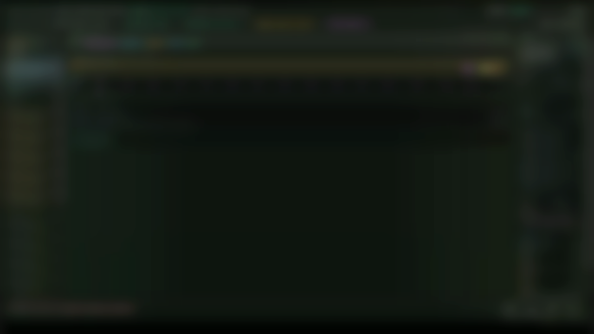
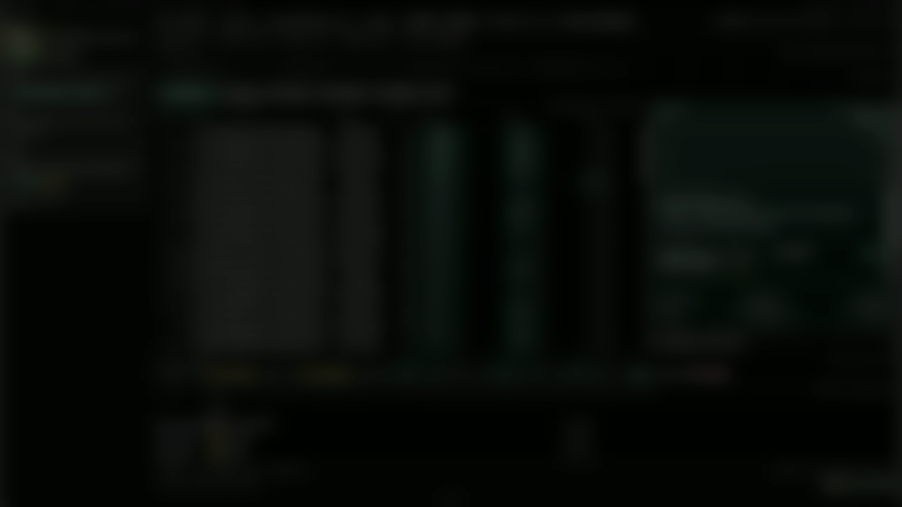

A public source map
Plectis
Inspect the map, clone the repository, and run the first local check.
Plectis is the public map for an AI-native workflow system: 78 component records in seven areas, each linked to the public source path it uses. The GitHub repository carries the standalone source slice, public-safe stubs for withheld private internals, fixtures, docs, and checks.
- quickstart
- public map
- evidence line
- source path
- scope limit
Short on time?
After the first loop, hand the map to your own AI.
Press the button, find the file in your downloads, and drag it into ChatGPT, Claude, Gemini, or Grok for review or analysis. Then ask whatever you like: the file itself tells the assistant to answer from the public evidence, cite exact pages and components, and stop where the public records stop.
Default AI handoff: orientation, question routes, component and area digests, evidence ranks, source links, and scope limits without the deep page bodies. Your assistant can review the map first, then open the heavier packet only when it needs the full text.
Using a coding agent instead? Claude Code, Codex, or Cursor can clone the repository, read AGENTS.md, run the quickstart check, and then answer from the source and public records. Working with a coding agent
Questions worth asking it
Four sets for four reasons to be here; any question from any set is fair to ask cold.
A plain first pass
- What is this, in plain terms?
- Where should I start?
- Walk me through one component, end to end.
- What is genuinely new here, if anything?
- Give me the two-sentence version I would tell a colleague.
A skeptical pass
- Argue against it.
- Which parts have the strongest evidence, and which the weakest?
- Why do only some components run external tools?
- What does it not prove?
- Is this packet steering me? Audit its own framing.
- Most accurate one-paragraph assessment you can give: neither generous nor harsh.
One area at a time
- Which area is closest to my field, and what is actually in it?
- What is actually in Entry & orientation?
- What is actually in Architecture & navigation?
- What is actually in Formal math & proof?
- What is actually in Agent reliability & safety?
- What is actually in Research & science?
- What is actually in Import & drift control?
- What is actually in Work & continuity?
With a coding agent in the repository
The sets above are questions for an assistant reading the map. A coding agent (Claude Code, Codex, Cursor) works inside a repository itself: one prompt sets it up, and after that you assign work rather than asking about a file. How that works.
Clone https://github.com/wcook04/plectis and open it. Read AGENTS.md and README.md to orient yourself, run the quickstart check, and show me what the result record says. Then take my questions.
Once a populated source tree is in front of it, work worth assigning, one item at a time:
- Run one component end to end and walk me through the evidence it leaves.
- Take one claim from the website and verify it against the source here.
- Which validators can you run right now, and what would each one prove?
- Make one check fail on purpose and show me how it refuses.
Examples, not a script: ask anything, and ask follow-ups. The packet routes each question to evidence; the verdict stays the assistant's.
Advanced: the raw layers, separately
-
A short orientation to paste in, for chats where a file upload is not possible.
-
Download full review packet
The advanced full-text layer: starter prompts, view descriptors, component records, and the public page bodies in one larger file.
-
The raw public map without the packet’s instruction layers, for automation.
Direct files, if a button fails or JavaScript is off: reader digest · full review packet · llms.txt
This is a working local source slice, not a finished or hosted product.
runs locally public source slice you can report issues no hosted service evidence-scoped claims
Why this is here
A way in, and a way to check it.
Plectis comes from a larger AI-native system I have been building with AI. I have not put all of it online: it includes live tools and non-public data, and releasing the whole thing at once did not seem sensible or responsible. This is a smaller public source slice instead, built around source-linked components, public-safe stubs, and small synthetic fixtures, so the shape of the work can be inspected without publishing the live working environment.
The idea behind it is that useful AI capability should build up in things you can inspect, like source links, evidence ranks, result records, and stated limits, rather than inside one-off model runs that leave nothing to check. The site is a small, checkable version of that.
21 June 2026: Microcosm became Plectis. The rename avoids confusion with the earlier Southampton Microcosm hypermedia system and acknowledges that lineage without implying endorsement or affiliation. Read the lineage note and changelog.
- It is meant as a way in. You can start from the map, open a component, and read its evidence record, source reference, and the line on what it does not prove, so nothing here asks you to take a summary on trust. The public repository carries the standalone source slice and its local checks.
- If something here is confusing, or claims more than it shows, I would rather hear it. Please let me know.
First loop
What is here, and what is not, in one pass.
The fastest way to understand Plectis today is not to read all 78 component records. Clone the repository, run the quickstart check, then follow one public record to its evidence line, source path, and scope limit.
- Clone the repository.
- Run the quickstart check and inspect the result record.
- Read the evidence kind, rank, real-tool marker, and the line that says what the pass does not prove.
- Inspect one component card, such as the cold-reader route map, and follow its source link.
- Read where the public record stops, and check the site never claims past it.
How to read this site
The source first, then the map.
This website is the current public map over the source slice. The quickstart is the natural first step; the architecture, evidence, and source pages read better once you have seen the local result record.
- First Run quickstart Clone the public source slice and inspect the first local result record.
- Evidence What the pass proves Read the evidence kind, independence rank, real-tool marker, and the scope limit.
- Architecture Whole-system map The shared path every component binds to, drawn from the source files.
- Source Open the repository Apache-2.0 source slice with public-safe stubs where private internals are withheld.
The site and repository must agree: the map explains the public slice, and the repository is the source you can inspect and run.
What this is
Seventy-eight components across seven areas.
- Each of the seven areas carries component records for the public slice. Formal math and proof has a Lean and Lake proof-check pipeline, premise retrieval, tactic routing, and verifier-trace repair. Agent reliability and safety replays sabotage, sandbox-escape, prompt-injection, and memory-poisoning cases. Research and science covers finance forecasting, a spatial world model, and a replication rubric. The rest cover source import and drift control, architecture and navigation, work and continuity, and entry and orientation.
- The populated source slice is designed to run locally against a folder and write readable state without external model calls. The public repository contains the standalone source slice; non-public internals stay out or appear only as explicit public-safe stubs.
- Most bind to one shared path that runs from a project on disk through to a result you can read.
- Each component declares its own evidence: a class, a strength rank from 1 to 5 for how independently it is checked, and a line on what it does not prove. The card gives you that, so you can judge it on the evidence rather than the wording.
- Some components run real tools: the Lean prover, Lake, finance statistics, git provenance checks. Others derive their verdict over copied source or a declared contract against small synthetic fixtures. Each card says which, in plain language.
- Reads as
- 78 components
- Means
- 78 public component contracts, each with its own evidence line
- Does not mean
- product maturity, or whole-system correctness
- To check it
- open a component card, read its evidence class and rank, then the line on what it does not prove
What's real
What runs, and how it's checked.
Some components execute real tools or runtimes: the Lean prover and Lake, finance statistics code, git provenance checks, or copied modules run in process. Others derive an independent verdict over a public contract and small fixtures. These are separate signals: the rank tells you how independent the verdict is; the execution marker tells you whether the public check invokes extra machinery.
- Running a real tool and earning a high rank are separate signals. A real-tool run is bounded to a small scope on purpose, so it is capped at 4: a bounded run proves less than a check that derives its own verdict. The evidence page ranks all 78 and says what each class checks.
- A fixture-bound replay is not a product substitute. It is the public-safe form of a mechanism that should not be disclosed as live private-system authority: it exposes the mechanism, the boundary, and the refusal, not a running service.
- The weakest class is honest about being weak: it confirms a fixture is well-formed. That is shape, not behaviour, and the components that carry it say so on their own card.
Claim audit
When an agent says it's done.
The Agent Claim Audit Casebook is a small evidence companion released with this site: redacted, replayable cases where an agent completion note or a monitor sign-off sounds finished, and the evidence records say something smaller. Each case runs a deliberately shallow reader next to the evidence check, so you can see exactly which claims survive and which are lowered or blocked.
- One case is a real agent trace whose "committed, clean" completion note lacked a final delta and any terminal validation; the claim is lowered, not accepted.
- One plants fabricated commit, ledger, and test-pass claims in a fixture completion note: real git and pytest checks block each one with a typed error code.
- One takes a monitor's "coverage complete, cleared" sign-off and reduces it to what its probes actually backed. A verdict is not authority; its evidence is.
Why this shape
Why a slice, and not the whole thing.
The fuller system is not all here, and that is on purpose. Putting its live parts and private data online at once did not seem sensible or responsible, so the public version shows the shape of the work in a form you can inspect on your own.
- It is standalone code you can run, with non-secret source copied and checked against where it came from, and result records over small synthetic fixtures.
- The fixtures are there for a reason: they are how a piece of the work can be shown without shipping the live system it normally runs against. Where a component only checks the shape of a fixture, its card says so.
- You can inspect the public map with no special access: run the quickstart, read the ranks, open the source paths, and follow the records.
Explore by area
Seven areas, one map.
The 78 components are grouped into seven areas, and each one leads into the source behind it. The one that matches why you came is the natural way in. The strongest material is near the top; the lighter, fixture-bound pieces say so on their own card.
Formal math & proof
Pieces of a proof pipeline you can open and run: premise retrieval over a copied Lean Std index, tactic routing, verifier-trace repair, claim separation. Three components run the real Lean prover locally on bounded examples; the rest release the checking layers as contracts you can open.
Lean proof check · Verifier trace repair · Premise retrieval
Architecture & navigation
The shared path every component binds to, and the pattern rules and routing that give the system its shape and let you move through it.
Pattern binding · Routing plane · Standards diagnostics
Import & drift control
The boundary that copies non-secret material into the public tree, checks it against its origin, and flags anything that has drifted.
Source projection import · Source-drift checks · Drift control room
Work & continuity
How reversible work is recorded, how landing decisions are made, and how a detached run picks back up where it left off.
Work transactions · Landing replay · Continuity runtime
Research & science
Replays of scientific and forecasting work, run over synthetic fixtures. One runs real finance statistics code; the rest check the shape of a result rather than producing it.
Finance forecast evaluation · Spatial world model · Replication rubric
Agent reliability & safety
Agent failure modes you can open and inspect, replayed over fixtures: sabotage, sandbox escape, prompt injection, memory poisoning. These are specimens, not live defences.
Sabotage monitor · Sandbox-escape replay · Prompt-injection policy
Entry & orientation
How a newcomer first meets the system and follows a short guided path through it.
Cold-reader route map · Guided walkthrough
Browse the docs
Open the documentation to browse every area, the quickstart, and how the system fits together.
Go to the docs
Optional context
Wider-system views, mapped back to evidence.
Plectis is the public map of a wider system I have been building. These globally-blurred stills are optional context from its frontend, the working console its backend serves. They are not a film, proof video, teaser, or recording promise. The public artifact is still the map above: each still only opens the part of the public map it points at. Additional orientation, code-map, component, and inspector views are held until their source-capability receipts exist. The underlying source footage stays private.

Work in motionSee how the system watches its agents run
An agent-trace workbench: a live fleet of runs streaming in. Opens the agent-observability runtime in the public map.
Open in the map
Domain executionSee a research workload running
A market-intelligence view: records on the left, an inspector on the right. Opens the finance-forecast evaluation spine in the public map.
Open in the mapOpen a view to land on its node in the public map. There you can select any node to inspect it, then open it (double-click, or press Enter) to follow it into the component, its evidence record, and the source on GitHub. The blur is baked into the image, not a filter that can be switched off. Additional code-map, orientation, inspection, and component views are prepared privately and added only when their source-capability receipts exist.
Review it
Built to be read sceptically.
It is worth reading sceptically, in both directions: a rank can overstate a component, but the plain wording can also undersell one. The system is built to be held to that standard, so it seems fair to do the same. A short route:
- Start from a component card and its evidence record here.
- Run the quickstart check before expecting broad component behaviour.
- Read how each component is checked: the 1-to-5 rank and the line on what it does not prove.
- Compare a strong component with a weak one. The weak ones say so on their own card; check that they are right to.
- Read where the public version stops, and confirm the site never claims past it.
Or hand it to your own assistant and ask it to argue against me:
Read this repository as a calibration reviewer. First, by area, name the strongest components and what each actually does, with its evidence class. Then judge both directions: where the wording claims more than the evidence shows, and where it undersells what a component demonstrates. Do not reduce the system to a set of projections; computed projection is one evidence class among several.What would help
If you think this is worth it.
I'm not selling anything. If you want to follow public changes, use the generated updates route; if Plectis seems worth your time, here is what actually helps.
- Run the review route and tell me where a claim reaches past its evidence, or where the wording undersells what is there.
- Open an issue or start a discussion if a component claims more than it proves.
- Tell me what I have got wrong, or what you would do differently. I'm a student without industry experience, so a careful outside read of the design, the boundaries, or the writing helps more than anything.
- Follow updates through the generated feed, repository watch route, releases, and discussions; there is no mailing-list signup form.
The model time this runs on comes out of a student budget I cover myself, so it is the real limit on how fast the work moves. Feedback is still the most useful thing you can give; if you would rather help with the compute side, the email above is the way to do it.
Source & contact
Open the source, or get in touch.
The public repository is up now with the standalone source slice, docs, fixtures, and checks. You can reach me directly below.
Public security contact: repository security policy · GitHub source
Every area names the public source path it maps and the evidence record that bounds it. The website, reader digest, and repository should agree on the public source slice and its scope limits. If you are pointing an automated agent at Plectis today, give it the repository, public packets, and this site.